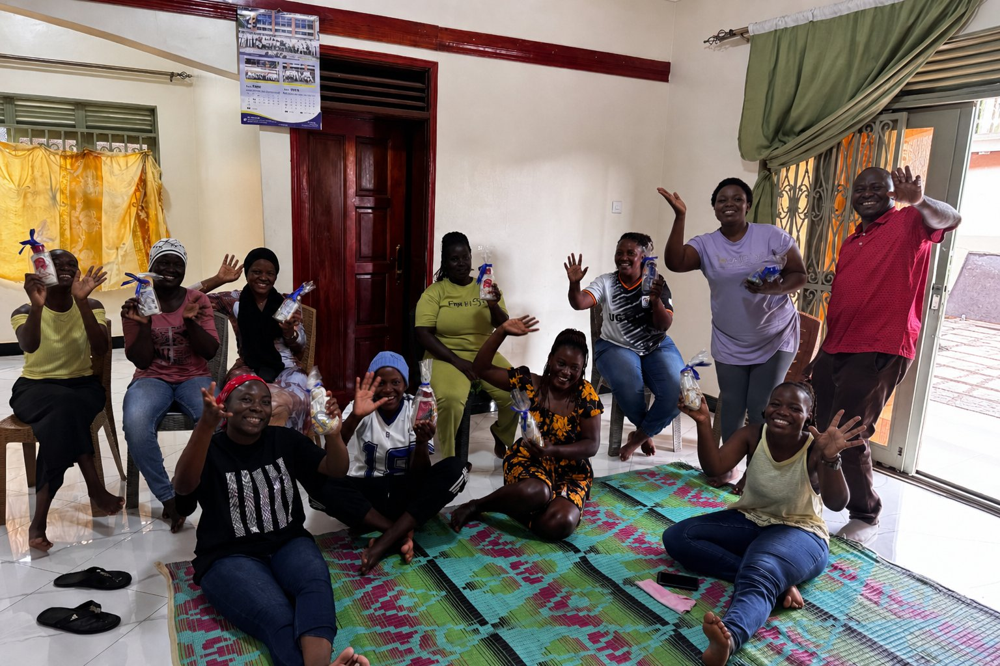

Their stories are tender and difficult, and we want to tell them with dignity and care. But what Paul saw was a quiet and powerful picture of God's grace.
As these women have begun to get some distance from destructive patterns that once held them, something beautiful is happening:
Hope is returning. And as hope returns, dreams are returning too.
One woman spoke about wanting to open a hair salon — not only as a way to provide for herself and her children, but also as a place for ministry and discipleship.
Another spoke about wanting to become a professional driver.
Others simply long for the skills and opportunity to earn an honest living, care for their children, and walk toward a different future.
These are not abstract “program outcomes.” These are mothers, daughters, and image-bearers beginning to believe that a different future may be possible.
Faithful, Patient, Prayerful Work
Wilson and Stella have served Uganda's ghettos for nearly 15 years. Their ministry is not quick, easy, or glamorous. It is faithful, patient, prayerful work among people whose lives are often very broken.
But the Lord is using their faithfulness.
Through discipleship, practical care, safe community, and steady encouragement, Wilson and Stella are helping women and families take steps toward healing, stability, and hope.
This is the kind of ministry Empower Dreams exists to strengthen: faithful indigenous leaders serving in difficult places, quietly multiplying disciples, compassion, and hope.
Would you pray with us?
- Wilson and Stella to have wisdom, strength, and protection
- These women to continue healing and growing in faith
- Practical pathways for training, work, and stability
- Their children to be safe, fed, educated, and surrounded by godly love
- The Gospel to take deep root in families and communities
Thank you for praying for faithful leaders serving in difficult places.
And thank you for helping Empower Dreams strengthen indigenous leaders like Wilson and Stella as they disciple, care for, and walk alongside people the Lord has not forgotten.
Mostly, thank you for praying.
Empower Dreams pays no salaries and covers its own operating expenses, so every dollar donated fuels mission impact through our partners.